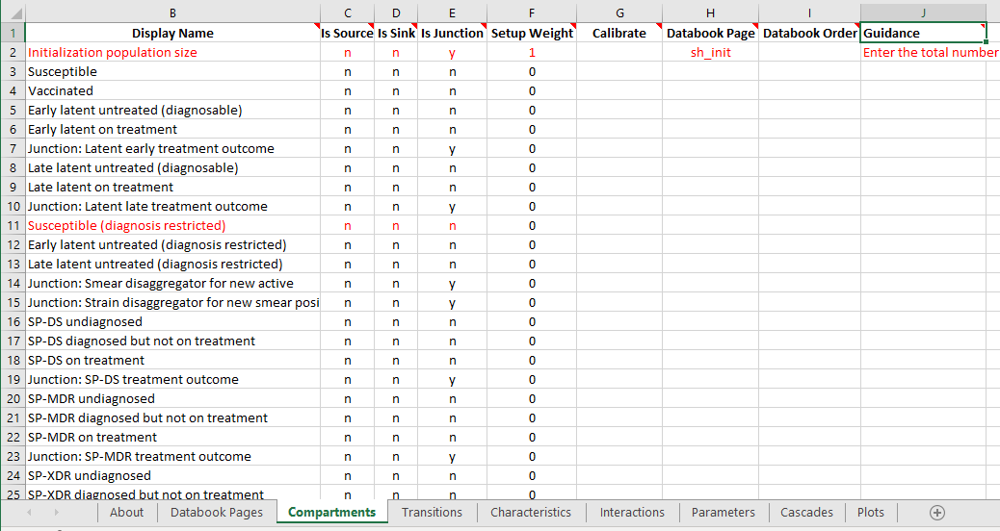
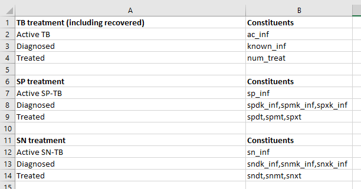

Frameworks¶
The framework is an object that represents the transition structure of the model in Atomica. It contains a listing of all of the compartments, characteristics, and parameters, as well as the transition matrix that links parameters with transitions between compartments. It does not contain a specification of the populations, because these are entered in the databook. This page assumes familiarity with basic Atomica concepts (e.g., compartments, characteristics, parameters, populations) and is intended as technical documentation on the implementation of the framework.
[1]:
import pandas as pd
import atomica as au
A ‘framework’ exists in two forms:
The ‘framework file’ which is an
xlsxfile, such asframework_tb.xlsxA Python object,
ProjectFramework, which is stored inProject.frameworkand is constructed by parsing the framework file
On the user input side, users of Atomica implementing new cascade models etc. will typically be modifying the framework file. On the development size, Python code can generally expect to interact with the ProjectFramework object. A key goal is to make the ProjectFramework as flexible as possible to accommodate changes in the Excel file, to maximize the extent to which changes in a project can be performed in the framework file without needing complex changes in the codebase.
ProjectFramework basics¶
The ProjectFramework class stores a parsed, validated representation of the framework file. The framework file consists of a set of sheets, with content on each of the sheets. An example from the TB framework is shown below

Here we can see that there are a number of worksheets in the file (‘Databook Pages’, ‘Compartments’, ‘Transitions’,…) and there is of course content on each sheet.
The ProjectFramework contains a member variable, sheets, which is an odict where the key is the sheet name and the value is a list of Pandas DataFrames that contains all of the tables on that sheet. A table is defined as a rectangular range of cells terminated by an empty row.
[2]:
F = au.ProjectFramework(au.LIBRARY_PATH / "tb_framework.xlsx")
F.sheets.keys()
Parameter "lu_prog" is in rate units and a maximum value of "1" has been entered. Rates in the framework should generally not be limited to "1"
Parameter "lx_prog" is in rate units and a maximum value of "1" has been entered. Rates in the framework should generally not be limited to "1"
Parameter "leu_act" is in rate units and a maximum value of "1" has been entered. Rates in the framework should generally not be limited to "1"
Parameter "lex_act" is in rate units and a maximum value of "1" has been entered. Rates in the framework should generally not be limited to "1"
Parameter "llu_act" is in rate units and a maximum value of "1" has been entered. Rates in the framework should generally not be limited to "1"
Parameter "llx_act" is in rate units and a maximum value of "1" has been entered. Rates in the framework should generally not be limited to "1"
Parameter "l_inf" is in rate units and a maximum value of "1" has been entered. Rates in the framework should generally not be limited to "1"
Parameter "v_inf" is in rate units and a maximum value of "1" has been entered. Rates in the framework should generally not be limited to "1"
Parameter "lr_inf" is in rate units and a maximum value of "1" has been entered. Rates in the framework should generally not be limited to "1"
Parameter "ar_act" is in rate units and a maximum value of "1" has been entered. Rates in the framework should generally not be limited to "1"
Parameter "ar_rec" is in rate units and a maximum value of "1" has been entered. Rates in the framework should generally not be limited to "1"
Parameter "pd_rec" is in rate units and a maximum value of "1" has been entered. Rates in the framework should generally not be limited to "1"
Parameter "pm_rec" is in rate units and a maximum value of "1" has been entered. Rates in the framework should generally not be limited to "1"
Parameter "px_rec" is in rate units and a maximum value of "1" has been entered. Rates in the framework should generally not be limited to "1"
Parameter "nd_rec" is in rate units and a maximum value of "1" has been entered. Rates in the framework should generally not be limited to "1"
Parameter "nm_rec" is in rate units and a maximum value of "1" has been entered. Rates in the framework should generally not be limited to "1"
Parameter "nx_rec" is in rate units and a maximum value of "1" has been entered. Rates in the framework should generally not be limited to "1"
Parameter "pd_term" is in rate units and a maximum value of "1" has been entered. Rates in the framework should generally not be limited to "1"
Parameter "pm_term" is in rate units and a maximum value of "1" has been entered. Rates in the framework should generally not be limited to "1"
Parameter "px_term" is in rate units and a maximum value of "1" has been entered. Rates in the framework should generally not be limited to "1"
Parameter "nd_term" is in rate units and a maximum value of "1" has been entered. Rates in the framework should generally not be limited to "1"
Parameter "nm_term" is in rate units and a maximum value of "1" has been entered. Rates in the framework should generally not be limited to "1"
Parameter "nx_term" is in rate units and a maximum value of "1" has been entered. Rates in the framework should generally not be limited to "1"
[2]:
['about',
'databook pages',
'compartments',
'transitions',
'characteristics',
'interactions',
'parameters',
'cascades',
'plots',
'#ignore extra plots',
'population types']
Notice that the sheet names are all converted to lowercase!
[3]:
F.sheets['databook pages'][0]
[3]:
| datasheet code name | datasheet title | |
|---|---|---|
| 1 | sh_pop | Demographics |
| 2 | sh_notif | Notifications |
| 3 | sh_treat | Treatment outcomes |
| 4 | sh_ltreat | Latent treatment |
| 5 | sh_init | Initialization estimates |
| 6 | sh_newinf | New infections proportions |
| 7 | sh_opt | Optional data |
| 8 | sh_inf | Infection susceptibility |
| 9 | sh_untpro | Untreated TB progression rates |
| 10 | sh_dalys | DALYs |
Some sheets contain multiple elements. For example, consider the ‘Cascades’ sheet here:

Intuitively, this sheet contains two separate ‘tables’ that each have a heading row, and they are separated by a blank row. When a worksheet is parsed, if there are any blank rows, multiple DataFrames will be instantiated, one for each ‘table’ present on the page. As shown below, F.sheets['cascades'] is a list of DataFrames, and each DataFrame stores the contents of one of the tables:
[4]:
type(F.sheets['cascades'])
[4]:
list
[5]:
len(F.sheets['cascades'])
[5]:
3
[6]:
F.sheets['cascades'][0]
[6]:
| TB treatment (including recovered) | constituents | |
|---|---|---|
| 1 | Active TB | ac_inf |
| 2 | Diagnosed | known_inf |
| 3 | Treated | num_treat |
[7]:
F.sheets['cascades'][1]
[7]:
| SP treatment | constituents | |
|---|---|---|
| 1 | Active SP-TB | sp_inf |
| 2 | Diagnosed | spdk_inf,spmk_inf,spxk_inf |
| 3 | Treated | spdt,spmt,spxt |
The code parses Excel sheets into DataFrames in ProjectFramework.__init__() and this initial stage of parsing is blind to the contents of the worksheet. This means that all columns of all sheets will be loaded into DataFrames. Any new columns added by the user in the framework file will automatically appear in the DataFrame when the framework file is loaded.
Accessing the data¶
You can access the contents from the Excel file by operating on the DataFrame. Notice how in the previous examples, the first row of each ‘table’ is assumed to be a heading and is set as the Columns property of the DataFrame. This means those column names can be used as normal to index the DataFrame:
[8]:
# This is the DataFrame from the 'Databook Pages' sheet
F.sheets['databook pages'][0]
[8]:
| datasheet code name | datasheet title | |
|---|---|---|
| 1 | sh_pop | Demographics |
| 2 | sh_notif | Notifications |
| 3 | sh_treat | Treatment outcomes |
| 4 | sh_ltreat | Latent treatment |
| 5 | sh_init | Initialization estimates |
| 6 | sh_newinf | New infections proportions |
| 7 | sh_opt | Optional data |
| 8 | sh_inf | Infection susceptibility |
| 9 | sh_untpro | Untreated TB progression rates |
| 10 | sh_dalys | DALYs |
Notice that the column titles are all converted to lowercase!
[9]:
# This is a listing of just the 'Datasheet Title' column. The name should be an identical match
# to the title in the Excel file. These titles are set directly based on the contents of the Excel
# file. If the title is changed in the Excel file, then references to it in the code will need
# to be updated in order to reflect this
F.sheets['databook pages'][0]['datasheet title']
[9]:
1 Demographics
2 Notifications
3 Treatment outcomes
4 Latent treatment
5 Initialization estimates
6 New infections proportions
7 Optional data
8 Infection susceptibility
9 Untreated TB progression rates
10 DALYs
Name: datasheet title, dtype: object
As these are just ordinary DataFrames, you can work with them in the same way as any other DataFrame in regards to indexing, accessing rows/columns, filling values etc.
Exporting a Framework¶
By design, although a ProjectFramework can be pickled and saved as an object, it cannot be exported back to a spreadsheet. Users are not expected to require the ability to programatically modify framework files (in contrast, they are expected to programatically modify databooks).
Making a new Framework¶
It is no longer necessary to export a blank framework file from the code - simply copy atomica/core/framework_template.xlsx to start a new template. That Excel file now has a lot of extra validation and autocompletion to facilitate creating new Frameworks. This will be outlined in detail in the user guide.
Validating the input¶
When a ProjectFramework is instantiated, it will read in everything in the Excel file. However, it is up to the code to actually use the variables contained in the framework. For example, a new column could be added to store an additional property of say, a compartment. However, it won’t have any effect on the simulation unless code is written to take advantage of this (e.g., model.py might use the new property to treat those compartments differently).
This presents a challenge - what should be done if the ProjectFramework does not contain something that is required by the code? The simplest solution is that the user’s custom code can simply check whether a particular sheet, a particular column, or a particular value is present in the ProjectFramework and act accordingly.
If you don’t want the logic of your code to be complicated by the additional validation checks, or if the code is performance-critical and you only want to validate values once, you can instead perform the validation when the ProjectFramework is loaded. The method ProjectFramework._validate() is automatically called after the spreadsheet is read in. At the moment, it mainly contains validation of the basic elements of an Atomica model - for example, ensuring that compartments,
characteristics, parameters, and the transition matrix are present. Here are some of the standard checks that are performed
Requiring that a sheet is present - an error will be thrown if the sheet is missing. For example, if the ‘Compartments’ sheet is missing, then the Framework is essentially unusable
Checking whether a property is present - for example, if the ‘Compartments’ page is missing the ‘Code Name’ column then the Framework is considered unusable
Validating the contents of specified fields - for example, the ‘Is Source’ field for a compartment can only be ‘y’ or ‘n’ so an error will result if a different value was entered in the framework file
Filling in any missing values with defaults - for example, if a ‘Compartment’ has an empty cell for ‘Is Source’ then it will default to ‘no’
The last three of those checks are implemented in framework.py:sanitize_dataframe() so they can be readily used for any DataFrame that is loaded in.
In addition to this, arbitrary validation can also be performed at this point. For example, ProjectFramework._validate() checks here that there are no transitions from a normal compartment to a source compartment.
Adding a quantity to the Framework¶
Adding something to the Framework can be done simply by adding an extra column or extra sheet. DataFrames associated with every Table on the page will be created. These can then be accessed directly from the Framework. In the simplest case, you can perform validation (like checking if a quantity was provided in the framework) at the point you want to use the quantity.
However, if you want to validate the new variables when the framework is loaded, then you will need to modify ProjectFramework._validate(). To add a default quantity, look at how default values for compartments etc. are handled in that function.
Convenience methods¶
First and foremost, the role of the ProjectFramework is to store information about compartments, characteristics, parameters, interactions, and transitions, because those are are the fundamental building blocks of Model objects, and simulations cannot be run without them. These are accessed so frequently that the ProjectFramework provides some special methods to facilitate working with them.
First, the Transitions sheet is handled in a special way. As with every other sheet, it appears in the .sheets property:
[10]:
F.sheets['transitions'][0].head()
[10]:
| initj | sus | vac | lteu | ltet | ltetoj | ltlu | ltlt | ltltoj | susx | ... | snxd | snxt | snxtoj | acr | bir | immi | imj | ddis | doth | emi | |
|---|---|---|---|---|---|---|---|---|---|---|---|---|---|---|---|---|---|---|---|---|---|
| default | |||||||||||||||||||||
| initj | None | sus_idiv | vac_idiv | lteu_idiv | ltet_idiv | None | ltlu_idiv | ltlt_idiv | None | susx_idiv | ... | snxd_idiv | snxt_idiv | None | acr_idiv | None | None | None | None | None | None |
| sus | None | None | v_num | l_inf | None | None | None | None | None | None | ... | None | None | None | None | None | None | None | None | doth_rate | e_rate |
| vac | None | None | None | None | None | None | None | None | None | None | ... | None | None | None | None | None | None | None | None | doth_rate | e_rate |
| lteu | None | None | None | None | le_ntreat | None | lu_prog | None | None | None | ... | None | None | None | None | None | None | None | None | doth_rate | e_rate |
| ltet | None | None | None | None | None | ltt_dur | None | None | None | None | ... | None | None | None | None | None | None | None | None | doth_rate | e_rate |
5 rows × 46 columns
However, this format is not very helpful for actually working with transitions. The ProjectFramework stores a special parsed representation of this in ProjectFramework.transitions which is an odict where the key is a parameter name, and the value is a list of tuples for every transition that parameter governs:
[11]:
print(F.transitions['b_rate'])
print(F.transitions['doth_rate'])
[('bir', 'sus')]
[('sus', 'doth'), ('vac', 'doth'), ('lteu', 'doth'), ('ltet', 'doth'), ('ltlu', 'doth'), ('ltlt', 'doth'), ('susx', 'doth'), ('ltex', 'doth'), ('ltlx', 'doth'), ('spdu', 'doth'), ('spdd', 'doth'), ('spdt', 'doth'), ('spmu', 'doth'), ('spmd', 'doth'), ('spmt', 'doth'), ('spxu', 'doth'), ('spxd', 'doth'), ('spxt', 'doth'), ('sndu', 'doth'), ('sndd', 'doth'), ('sndt', 'doth'), ('snmu', 'doth'), ('snmd', 'doth'), ('snmt', 'doth'), ('snxu', 'doth'), ('snxd', 'doth'), ('snxt', 'doth'), ('acr', 'doth')]
This also illustrates an example of where validation is used - the parsing will fail unresolvably if the Transitions sheet is missing from the framework file, so ProjectFramework._validate() first checks that the sheet is present and displays an informative error if it is missing.
Next, the DataFrames for compartments, characteristics, parameters, and interactions have the ‘Code Name’ column set as the index for the DataFrame:
[12]:
F.sheets['compartments'][0].head()
[12]:
| display name | is source | is sink | is junction | setup weight | calibrate | databook page | databook order | guidance | default value | population type | duration group | |
|---|---|---|---|---|---|---|---|---|---|---|---|---|
| code name | ||||||||||||
| initj | Initialization population size | n | n | y | 1 | None | sh_init | None | Enter the total number of people in each popul... | None | default | None |
| sus | Susceptible | n | n | n | 0 | None | None | None | None | None | default | None |
| vac | Vaccinated | n | n | n | 0 | None | None | None | None | None | default | None |
| lteu | Early latent untreated (diagnosable) | n | n | n | 0 | None | None | None | None | None | default | None |
| ltet | Early latent on treatment | n | n | n | 0 | None | None | None | None | None | default | None |
This means that you can access a row of this DataFrame using .loc and passing in the code name of the quantity. For example:
[13]:
F.sheets['compartments'][0].loc['sus']
[13]:
display name Susceptible
is source n
is sink n
is junction n
setup weight 0
calibrate None
databook page None
databook order None
guidance None
default value None
population type default
duration group None
Name: sus, dtype: object
As usual, the .loc method returns a Pandas Series object, which is similar to a dict(). Note that the name of the Series is the code name of the quantity i.e.
[14]:
F.sheets['compartments'][0].loc['sus'].name
[14]:
'sus'
This allows you to retrieve the code name based only on the Series object - so for example, if you retrieved that row by index rather than by name
[15]:
row = F.sheets['compartments'][0].iloc[0]
print(row)
display name Initialization population size
is source n
is sink n
is junction y
setup weight 1
calibrate None
databook page sh_init
databook order None
guidance Enter the total number of people in each popul...
default value None
population type default
duration group None
Name: initj, dtype: object
then you can still recover the name
[16]:
row.name
[16]:
'initj'
Because the column names have also been set in the DataFrame, you can index the Series using the column name to retrieve a specific property. For example, if we want to check which databook page the vac compartment is on:
[17]:
F.sheets['compartments'][0].loc['vac']['databook page']
The column names are read straight from the Excel file - any additional columns will automatically appear and be usable. Note that there should be an exact match between the name of the column in the Excel file, and the string used in the code (for example, you could not use F.sheets['Compartments'].loc['vac']['Databook page'] because it is case sensitive)
For convenience, the .comps, .pars, .characs, and .interactions property methods map to their corresponding sheets. That is, F.comps is shorthand for F.sheets['Compartments']. So the above command could instead be
[18]:
F.comps.loc['vac']['databook page']
Those properties directly return the DataFrame in F.sheets so if you modify the DataFrame via F.comps it will be changed everywhere.
Finding specific items by their code name is very common. To facilitate this, you can use the .get_comp, .get_charac, .get_par, and .get_interaction property methods to look up rows of the corresponding DataFrames by code name. For example, to retrieve the row for vac, instead of F.comps.loc['vac'] you can use
[19]:
F.get_comp('vac')
[19]:
display name Vaccinated
is source n
is sink n
is junction n
setup weight 0
calibrate None
databook page None
databook order None
guidance None
default value None
population type default
duration group None
Name: vac, dtype: object
So looking up the databook page can be made even simpler:
[20]:
F.get_comp('vac')['databook page']
Sometimes you might know the code name without knowing the type of the variable - for example, only given the code name 'alive', should you be looking up a compartment or a characteristic? In that case, you can use the .get_variable() method which will search for the name in each of compartments, characteristics, parameters, and interactions. The return value is a tuple where the first entry is the row of the DataFrame, and the second entry is a string like 'comp', 'par',
'charac', which identifies what type of variable was passed in
[21]:
F.get_variable('vac')
[21]:
(display name Vaccinated
is source n
is sink n
is junction n
setup weight 0
calibrate None
databook page None
databook order None
guidance None
default value None
population type default
duration group None
Name: vac, dtype: object,
'comp')
Finally, sometimes you might have the display name, and not the code name. You can also pass a display name into get_variable() and it will retrieve the corresponding item
[22]:
F.get_variable('Vaccinated')
[22]:
(display name Vaccinated
is source n
is sink n
is junction n
setup weight 0
calibrate None
databook page None
databook order None
guidance None
default value None
population type default
duration group None
Name: vac, dtype: object,
'comp')
Note that these functions rely on the fact that code names and display names are supposed to be unique across all of the different variable types (i.e. not only can you not have two compartments with the same name, you cannot give a parameter the same name as a compartment). This is checked for in ProjectFramework._validate().
Iterating over items¶
The simplest way to iterate over rows of a DataFrame is using the iterrows() method of the DataFrame. For example, to loop over all compartments, you could use:
[23]:
for _,row in F.comps.iterrows():
print('%s-%s' % (row.name,row['is source']))
initj-n
sus-n
vac-n
lteu-n
ltet-n
ltetoj-n
ltlu-n
ltlt-n
ltltoj-n
susx-n
ltex-n
ltlx-n
acj-n
spj-n
spdu-n
spdd-n
spdt-n
spdtoj-n
spmu-n
spmd-n
spmt-n
spmtoj-n
spxu-n
spxd-n
spxt-n
spxtoj-n
snj-n
sndu-n
sndd-n
sndt-n
sndtoj-n
snmu-n
snmd-n
snmt-n
snmtoj-n
snxu-n
snxd-n
snxt-n
snxtoj-n
acr-n
bir-y
immi-y
imj-n
ddis-n
doth-n
emi-n
Notice how the .name property can be used inside the loop in order to identify the code name for the row.
Although simple, this operation is relatively computationally expensive because it creates a Series object for every row. If performance is critical (for example, during Model.build()) then it is better to use the .at method of the DataFrame. For example:
[24]:
F.comps.at['sus','is source']
[24]:
'n'
In a loop, you would then have to first look up the index values and then iterate over them:
[25]:
for comp_name in list(F.comps.index):
print('%s-%s' % (comp_name,F.comps.at[comp_name,'is source']))
initj-n
sus-n
vac-n
lteu-n
ltet-n
ltetoj-n
ltlu-n
ltlt-n
ltltoj-n
susx-n
ltex-n
ltlx-n
acj-n
spj-n
spdu-n
spdd-n
spdt-n
spdtoj-n
spmu-n
spmd-n
spmt-n
spmtoj-n
spxu-n
spxd-n
spxt-n
spxtoj-n
snj-n
sndu-n
sndd-n
sndt-n
sndtoj-n
snmu-n
snmd-n
snmt-n
snmtoj-n
snxu-n
snxd-n
snxt-n
snxtoj-n
acr-n
bir-y
immi-y
imj-n
ddis-n
doth-n
emi-n